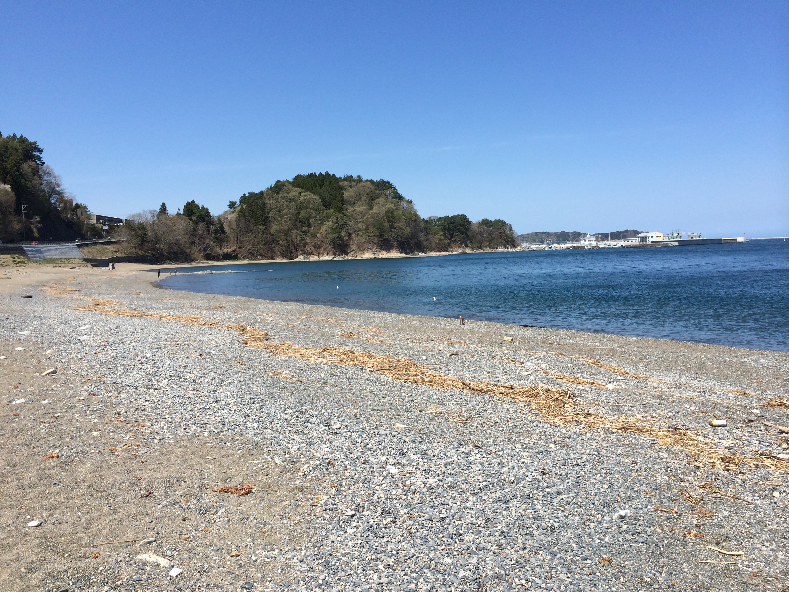
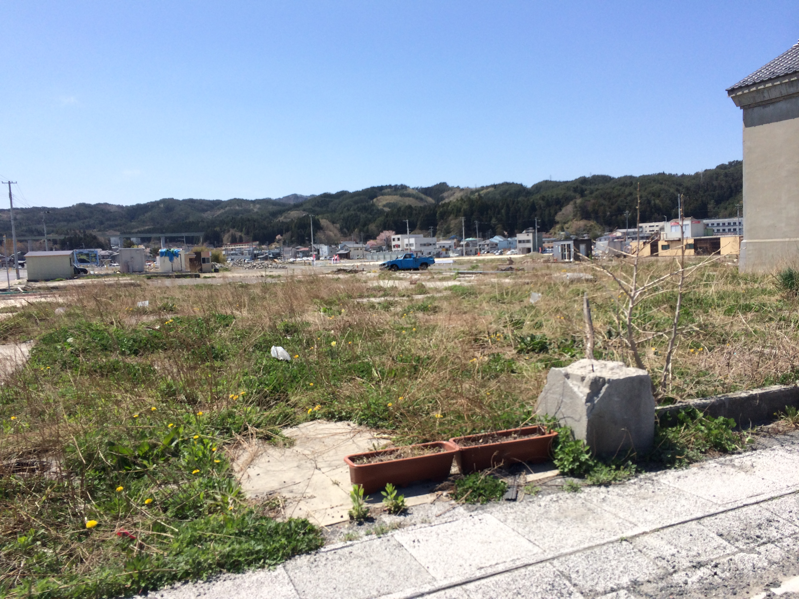
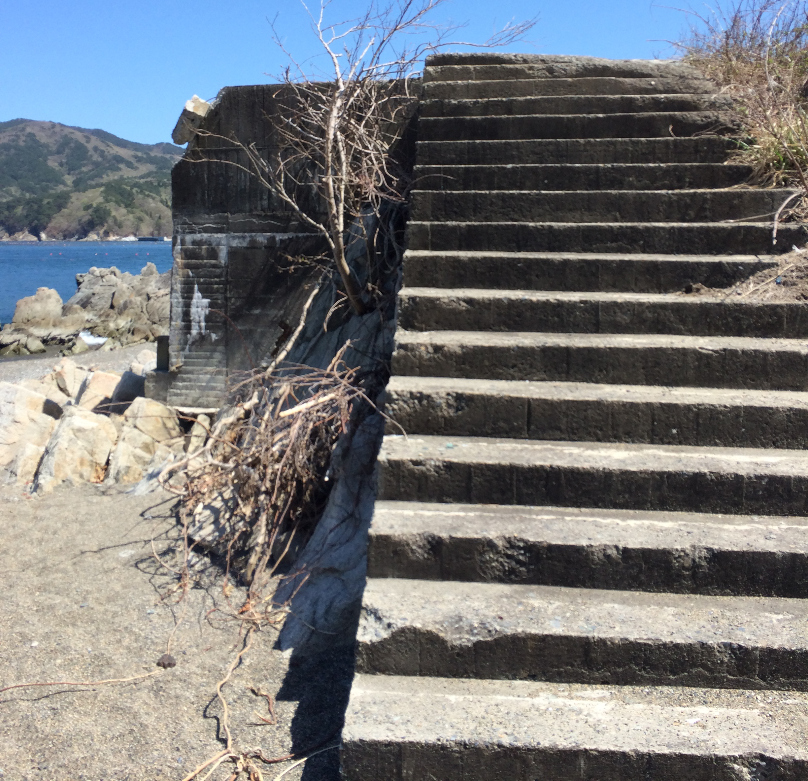
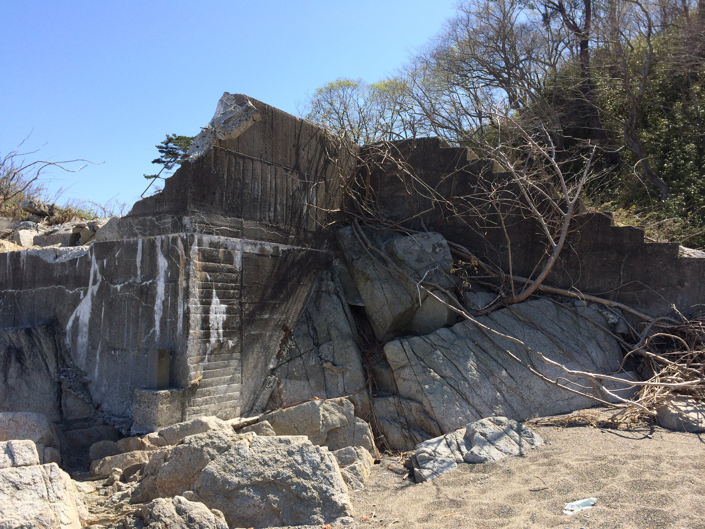
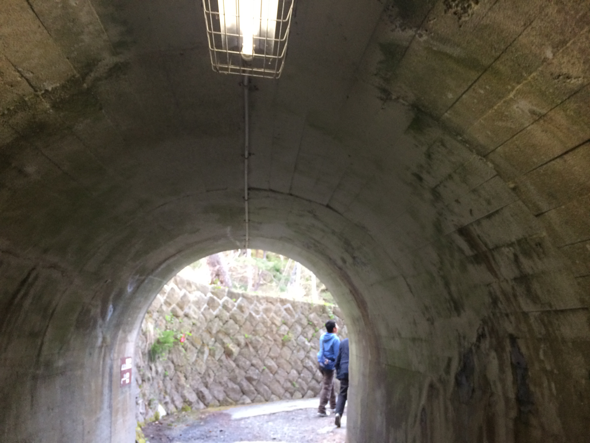

この日から私は自分と向き合いながら切断した。
インターネットとは私にとって情報の消費と現実逃避を兼ねている物の一つだ。嫌なこと楽しいことそれらを全て客観的にみて消費し今に生きることを実感する。
人とのつながりがどうやってできるのか他の人の考えはどんな形かそれを大量に複数人知ることができる。

それを少しでも接続を切るのは最初はわざと考えずに切った。
インターネットとは私にとって情報の消費と現実逃避を兼ねている物の一つだ。嫌なこと楽しいことそれらを全て客観的にみて消費し今に生きることを実感する。
人とのつながりがどうやってできるのか他の人の考えはどんな形かそれを大量に複数人知ることができる。
それを少しでも接続を切るのは最初はわざと考えずに切った。
岩手の実家から送ってもらう食料品や生活用品のなかにDVDなどを頼み送ってもらっていた中から1日一作品選び観ることにした。見た作品はどれも4年以上前のものがほとんどだった。一番多感であった時期に好きだったものに影響を受けるという。あの時期は何をしていたのかを思い出していた。

一番に思い出すのはライフラインが切断された時のことだ。震災時私は家にいた弟とゲームを取り合いして先を譲ったDSを順番待ちしてテトリスをしていた。揺れはじめすぐに揺れは収まると思っていたので気にも留めなかったが、だんだんと揺れが大きくなりものが落ち崩れてきたとき母と弟と私で外に飛び出した。その後すぐ祖父と祖母と合流して家に戻った。一階の来客用の和室に集まった。

この様子だと父もしばらく戻ってこれないだろうと思った。岩手・宮城内陸地震（2008）のとき父は休みの日だったが地震直後すぐに仕事にいくのを見ていたからだ。
帰ってきた父の車でテレビを見た信じられなかった、その場所は昨年家族で旅行した街と海だったからだ。今では復旧して素に近い姿には戻ってはいるが何かが違う。あの時の風景は二度と帰ってこない。

そのことを受け入れるのには時間がかかった。
私はラジオで情報に触れただが津波が数メートルという情報でそんなことが起きのか半信半疑であった。そのあと帰ってきた父の車で震災の映像を見た。ほとんど信じられなかった。一月も経たないうちに現場に行って仕事をした父から話を聞いた。各学校の体育館に避難した人々、死体安置所になってい体育館に並べられた顔の判別ができなくなった大量の遺体の話。宮古署を襲った津波の影響で書類作業に追われたこと。

私であれば耐えられないような話が多く、私はフィクションのような感覚でその話をきいていた。
見ているものはしばらく頭の中に焼きつく。嫌なことがあれば忘れようとする。そうやっていきることは普通ではあるが忘れずに生きることも普通でどちらも悪ではないことことこそ忘れてはいけないのではないのかと思う。

震災直後復旧してみたのは2ちゃんねるやアメーバブログなどが多かった。 電気が戻ってきたときPCで見た景色に驚愕した。なぜテレビではなくインターネットで調べたのかというと特定の場所を見たかったからだ。

宮古市のシートピアなあど、浄土ヶ浜、休暇村、藤の川海水浴場。全てが変わり果てていた。
インターネットには現実の人間と同じ本当のことと意図して嘘を書いていたり自己解釈が混ざっている、むしろ現実の人間以上に本音が見やすいものであると言える。震災の時の感動話や地域の情報で錯綜しているもの、憶測が人づてに変化したものが多いかったように嘘か本当か根拠があるかどうかを確認することが必要。

続く停電とインターネットの無い環境 震災後、多くの余震が起きた年末には停電が再び起こり復旧するまで時間がかかった。制限されることで見えたものでは多くのことを私たちは依存していることがわかる、テレビインターネットラジオ新聞からどれだけの情報を取り入れているのか？

インターネット依存 インターネットはもう一つの現実と虚構と依存でではないのか、そんなことを思う。
